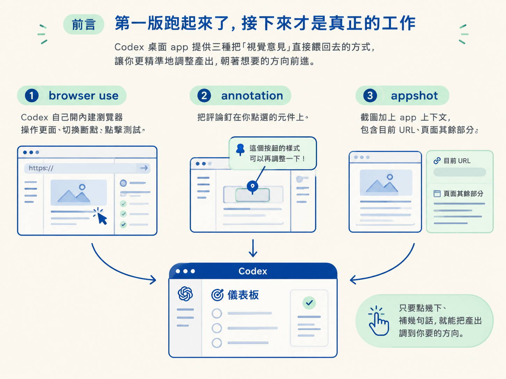
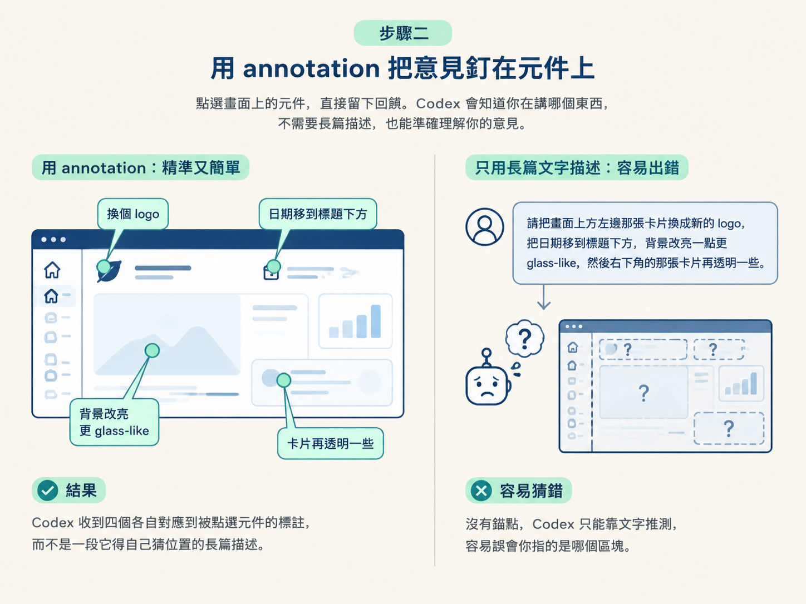
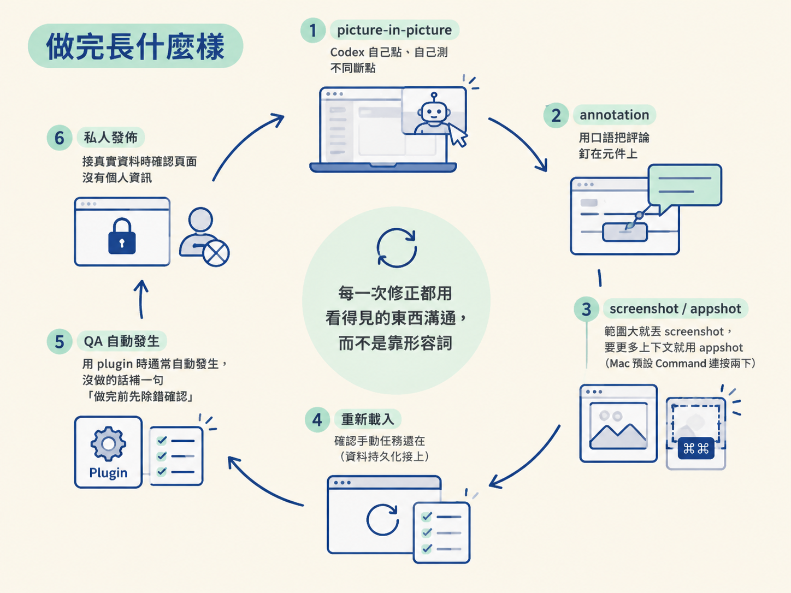

做完這一課，你手上會有一條完整的視覺迭代流程：看到不對勁的地方，點一下、寫一句話，Codex 就照著改；改完它自己開瀏覽器驗證，你最後檢查一次就能發佈。
動手前你需要先具備兩件事：一是上一課已經把第一版 dashboard 建起來，有東西可以迭代；二是使用 Codex 桌面 app，因為接下來的 annotation、appshot 與內建瀏覽器都在 app 裡。
上一課的 prompt 送出後，你會拿到一版可以跑的儀表板。但第一版幾乎不會剛好是你想要的，顏色偏了、某個圖示不順眼、日期跟標題擠在一起。這時候如果用文字一句一句描述，往往講到口乾還講不清楚，因為「那個區塊」到底指哪裡，彼此認知根本不一樣。
這一課就是要把迭代做得更精準。Codex 桌面 app 提供三種把「視覺意見」直接餵回去的方式：讓它自己開瀏覽器動手驗證的 browser use、把評論釘在點選元件上的 annotation、以及帶著 app 上下文的 appshot。三種工具合起來，你只要動手點幾下、補幾句話，就能把產出調到你要的方向。

建置過程中，留意畫面上會不會出現一個叫 picture-in-picture（子母畫面）的小視窗。那是 Codex 正在使用內建瀏覽器的即時畫面。預期看到它打開網站、到處點、切換不同斷點，例如切到手機尺寸檢查排版有沒有跑掉，再慢慢把視窗拉回大尺寸。畫面上的小游標，就是它點擊與測試留下的痕跡。
這個行為叫 browser use，也就是讓 Codex 透過瀏覽器真的去操作頁面，而不是只看程式碼推測。它的價值在於把「驗證」變成它自己的工作：Codex 不必交出一個結果就要你相信它沒問題，而是能自己在不同斷點上確認，發現不對再回頭修。若你看到的是它一次做完就宣布完成、完全沒開瀏覽器，那就是驗證沒跑起來，後面步驟五會講怎麼補。
等第一版出現後，打開 annotation（標註）工具，直接在畫面上點你不滿意的地方，寫下意見。以範例那次為例，講者實際點了四處：
# 用 annotation 點選元件後，可以像這樣下指令：
# 1. 這個 logo 不喜歡，請換掉
# 2. 日期跟標題黏在一起，把日期移到標題下方
# 3. 背景太暗，改亮一點、更 glass-like
# 4. 這幾張卡片整體再透明一些annotation 的好處，是它把評論直接綁在「你點的那個元件」上。你不需要精確描述「畫面上方左邊那張卡片」，Codex 已經知道你在講哪個東西。也因為如此，你的用詞可以很口語，甚至有點模糊都沒關係，錨點已經對上了。預期看到的產出，是 Codex 收到四個各自對應到被點選元件的標註，而不是一段它得自己猜位置的長篇描述。

如果問題牽涉的範圍比單一元件大，例如「我不喜歡這一整排卡片」，逐個標註就太囉嗦了，直接丟截圖更快。這裡有兩種截圖方式，差別在帶了多少上下文：
| 方式 | 內容 | 什麼時候用 |
|---|---|---|
| 一般 screenshot | 只有畫面的點陣圖 | 問題明確落在畫面上，直接看圖就懂 |
| appshot | 截圖加上 app 的上下文（例如目前所在的 URL、頁面其餘部分） | 需要更多上下文，或要批評、比較整體時 |
appshot 在 Mac 上的預設熱鍵是 Command 連按兩下（Windows 的對應鍵待官方補上，熱鍵可以自訂）。它的差別在於，Codex 除了看到那張圖，還知道你當時在哪個網址、頁面的其他部分長怎樣，於是回饋可以更有效率。簡單說：單純說「這一排不喜歡」就用截圖，要它連同整體狀況一起判斷就用 appshot，工具只是提供不同粒度的選擇。
迭代到一半，做一件容易被忽略的檢查：重新載入頁面，看你手動新增的任務還在不在。因為 prompt 裡指定了 durable Sites data，這些手動任務應該在整理後仍被保留。
若 X 則 Y：重新載入後它們還在，代表資料層有接上，繼續調視覺就好；如果它們不見了，持久化沒有真的接上，這比任何配色問題都更需要優先修。你可以直接把這個觀察寫成回饋，讓 Codex 回頭檢查資料層。
你可能會想：要不要每次都交代它「跑所有測試、做完前確保沒問題」？答案是多半不用，但要知道背後的機制。
用 Sites 或 Build Web Apps 這類 plugin 時，plugin 內含的 skill 已經寫好這些驗證行為，會告訴 Codex 要用 browser use 去檢查、怎麼有效率地除錯。再加上現在的模型本身就被訓練過做前端建置與除錯，所以通常它會自己去做，不需要你逐項交代。以前常用的 Playwright MCP，現在因為有 browser use 而變得比較不需要。
若你從一個全新專案開始、又沒使用任何 plugin，看到它沒有自己驗證，補這一句就夠了：
Please debug and make sure it's right before you finish.預期看到的是它回頭打開頁面、跑一次檢查、修掉問題再收尾。換句話說，QA 在多數情況下會自動發生，你要做的是「發現它沒做時把它喊回來」。
browser use 和其他工具一樣會消耗 token，實際多寡取決於你的專案與 prompt。不過有一個直覺但重要的判斷：讓 Codex 直接點開來看、當場看到問題，通常比用純文字描述問題更有效率。因為純文字描述時，它只能在腦中想像「這畫面應該長什麼樣」，反而容易繞路。至於在內建瀏覽器還是外部瀏覽器裡跑 browser use，講者的說法是效果一樣，差別只在於在 app 內使用比較順手。
這一步不可逆，先看清楚再動手。調到滿意之後就發佈，範例要的是私人發佈。這裡有一條不能忘的界線：如果你接的是真實的 Gmail、Slack，發佈前務必確認頁面上沒有任何個人資訊。用 fixtures 的示範不會有這個問題，但用真實資料時，一個公開的網址就可能把你的私人訊息一起公開出去。
走完這五步，你會看到一個「看得見就改得動」的循環：picture-in-picture 顯示 Codex 自己點、自己測不同斷點；annotation 讓你用口語把評論釘在元件上；範圍較大就丟 screenshot，要更多上下文就用 appshot（Mac 預設是 Command 連按兩下）。重新載入後手動新增的任務還在，代表資料持久化真的接上了；用 plugin 時 QA 通常自動發生，沒做的話補一句「做完前先除錯確認」即可。最後以私人方式發佈，接真實資料時確認頁面沒有個人資訊。

至於 browser use 為什麼有效、模型怎麼被訓練成會做前端除錯，那是原理層的事，這裡不展開。你只要記住一件事就好：每一次修正都盡量用「看得見的東西」溝通，而不是靠一堆形容詞。到這裡這條視覺提示流程就完整了：方向用圖給、素材用資料給、成品用驗證收尾。想把這套手法搬回自己的專案，下一步就是挑一個真實的 side project，從一張 moodboard 與一份資料契約開始。